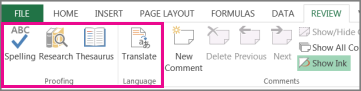

To check spelling for any text on your worksheet, click Review > Spelling.
Tip: You can also press F7.
Here are some things that happen when you use the spelling checker:
If you select a single cell for spell check, Excel checks the entire worksheet, including the comments, page headers, footers and graphics.
If you select multiple cells, Excel checks spelling only for those cells.
To spell check words in a formula bar, select the words.
Note: Excel doesn’t check spelling in cells that contain formulas.
Both AutoComplete and AutoCorrect can help fix typing errors on the go.
AutoComplete, on by default, helps to maintain accuracy as you type by matching entries in other cells and does not check individual words in a cell, AutoComplete can be handy when creating formulas.
AutoCorrect fixes errors in formulas text, worksheet control, text box, and chart labels. Here’s how to use it:
Click File > Options.
Under the Proofing category, click AutoCorrect Options, and check the most likely typing errors.
Note: You can’t use AutoCorrect for text in a dialog box.
You can also check out Research, Thesaurus and Translate for more help with spelling and language.

Here are some things that happen when you use the spelling checker:
If you select a single cell for spell check, Excel checks the entire worksheet, including the comments, page headers, footers and graphics.
If you select multiple cells, Excel checks spelling only for those cells.
Note: Excel doesn’t check spelling in cells that contain formulas, but you can spell check words in the formula - just select the words in the formula bar.